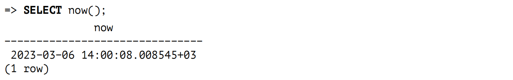
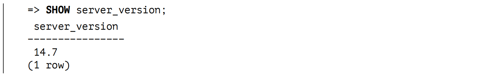

关于此书
本书适合哪些人？
本书适合那些在使用数据库时不愿满足于"暗箱"操作的人。如果你渴望学习，不愿盲从专家的建议，并且喜欢自己弄清楚一切，那么请继续阅读。
我假设读者已经尝试使用过 PostgreSQL，并且对其工作原理有一定的了解。初学者可能会觉得这本书有点难。例如，我不会讲解如何安装服务器、输入 psql 命令或设置配置参数。
我希望这本书对那些熟悉其他数据库系统，但想转而使用 PostgreSQL 并希望了解两者之间差异的人也有所帮助。几年前，如果有这样一本书，我本可以节省很多时间。这也正是我最终写下这本书的原因。
本书不提供的内容
本书并不是一本配方集。在此处，你无法找到适用于所有场合的现成解决方案，但如果你理解了复杂系统的内部机制，你将能够分析和批判性地评价他人的经验，并得出自己的结论。正因如此，我会解释一些细节，这些细节一开始看起来可能并没有实际用途。
但本书也不是一本教程。虽然我会深入探讨一些领域 (这些领域我自己更感兴趣)，但可能对其他领域只字不提。
本书绝不是一本参考手册。我尽量做到准确，但并不打算替代官方文档，因此可能会略过一些我认为不重要的细节。在任何不清楚的情况下，请阅读官方文档。
本书不会教你如何开发 PostgreSQL 内核。我并不要求读者具备 C 语言的知识，因为这本书主要面向数据库管理员和应用开发者。但我确实提供了大量源代码的引用，这些引用可以为你提供尽可能多的细节，甚至更多。
本书提供的内容
在介绍章节中，我简要介绍了主要的数据库概念，这些概念将作为所有进一步叙述的基础。我并不期望你从这一章节获取太多新的信息，但我仍然将其包括在内，以便构建完整的概念框架。此外，这一概述对于那些从其他数据库系统迁移过来的人来说可能也会有所帮助。
第一部分讨论了数据一致性和隔离性的问题。我首先从用户的角度来探讨这些问题 (你将了解到有哪些隔离级别以及它们的影响)，然后深入探讨其内部机制。为此，我将解释多版本并发控制以及快照隔离的实现细节，尤其是对于过期行版本的清理。
第二部分描述了缓冲区缓存和预写式日志，后者用于在故障后恢复数据的一致性。
第三部分详细介绍了各种锁的结构和使用，包括用于内存的轻量级锁、用于关系的重量级锁以及行级锁。
第四部分解释了服务器如何规划和执行 SQL 查询。我会告诉你有哪些数据访问方法、可以使用哪些连接方法，以及如何应用收集的统计信息。
第五部分在之前已经讨论过的 B 树索引的基础上，进一步探讨了其他访问方法的索引。我将解释一些扩展性的基本原则，这些原则定义了索引系统的核心、索引访问方法和数据类型之间的界限 (这将引出操作符类的概念)，然后详细介绍每种可用的方法。
PostgreSQL 包括多个"自省"扩展，这些扩展在日常工作中不常使用，但为我们提供了观察服务器内部行为的机会。本书大量使用了这些扩展。除了让我们能够探索服务器的内部工作原理之外，在复杂的使用场景中，这些扩展还可以协助我们进行故障排查。
约定
我试图以一种可以从头到尾逐页阅读的方式来编写这本书。然而，要一次性揭示所有真相几乎是不可能的，所以我不得不多次回到同一个话题。如果每次都写上"将在后面讨论"，这不可避免地会让文本变得冗长。因此，在这种情况下，我只是在页边空白处标注了页码，以便你参考后续的讨论。类似地，指向前面的数字，将带你回到之前已经讨论过该主题的页面。
本书中的文字和所有代码示例都适用于 PostgreSQL 14。在某些段落旁边，你可以看到页边空白处标有一个版本号。这意味着提供的信息从所标注版本开始适用，而所有之前的版本要么没有描述的功能，要么采用了不同的实现。对于尚未将系统升级到最新版本的用户，这样的提示可能会非常有用。
我还使用页边空白处来显示所讨论参数的默认值。普通参数和存储参数的名称均以斜体字显示，例如：work_mem。
在脚注中，我提供了多个信息来源的链接。首先也是最重要的是，我列出了 PostgreSQL 的文档 1，这些文档是知识的源泉。作为项目的重要组成部分，它们始终由 PostgreSQL 开发者自行更新。然而，最重要的参考资料无疑是源代码 2。即使你不了解 C 语言，单纯通过阅读注释和浏览 README 文件，你也可以找到很多答案。有时，我还会引用 commitfest 的条目 3：你总是可以通过阅读 psql-hackers 邮件列表中的相关讨论，追溯所有变更的历史，并理解开发者做出决策的逻辑，但这需要翻阅大量邮件。
书中包含的旁注可能会使讨论偏离主线 (但我还是忍不住把它们加入书中)，这些内容以这样的形式印刷，便于跳过。
当然，本书包含了多个代码示例，主要是 SQL 代码。代码示例以提示符 => 开始，必要时会跟随服务器的响应信息：

如果你在 PostgreSQL 14 中仔细重复所有提供的命令，你应该能够获得完全相同的结果 (包括事务 ID 和其他不重要的细节)。无论如何，本书中的所有代码示例都是由包含这些命令的脚本生成的。
当需要演示多个事务的并发执行时，在另一个会话中运行的代码会缩进，并用一条竖线标注。

要尝试这些命令 (这对自学很有用，就像任何实验一样)，可以打开两个 psql 终端。
命令名称和各种数据库对象 (如表与列、函数或扩展) 的名称在文本中使用无衬线字体突出显示：UPDATE，pg_class。
如果从操作系统调用程序，它会以 $ 结尾的提示符显示：
我使用的是 Linux，但不涉及任何技术细节；只需要对这个操作系统有一些基本了解就足够了。
致谢
写书并非孤军奋战，现在我有一个绝佳的机会来感谢那些帮助过我的好人们。
我非常感谢 Pavel Luzanov，他在正确的时机出现，鼓励我开始做一些真正有意义的事情。
我还要感谢 Postgres Professional 公司，感谢他们让我有机会在工作之外的时间继续这本书的创作。当然，公司背后是具体的人，因此我想特别感谢 Oleg Bartunov，感谢他分享的想法和无尽的精力；还要感谢 Ivan Panchenko，感谢他的全面支持以及对 LATEX 的帮助。
我要感谢教育团队的同事们，感谢他们营造的创意氛围以及对讨论的参与，这些讨论塑造了我们培训课程的范围和形式，并且在本书中也有所体现。特别感谢 Pavel Tolmachev，他对草稿进行了细致的审查。
本书的许多章节最初以文章形式发表在 Habr 博客上 4，我非常感谢读者们的评论和反馈。这些反馈展示了这项工作的重要性，揭示了我知识中的一些空白，并帮助我改进了文本。
我还要感谢 Liudmila Mantrova，她为润色这本书的语言付出了很多努力。如果你未曾在每个句子上都磕磕巴巴，那便是她的功劳。此外，Liudmila 还费心将这本书翻译成英文，我对此也深表感谢。
我没有列出具体的名字，但本书中提到的每一个功能或特性，都凝聚了许多人的多年心血。我敬佩PostgreSQL 的开发者们，并且很高兴能有幸称其中的许多人为我的同事。